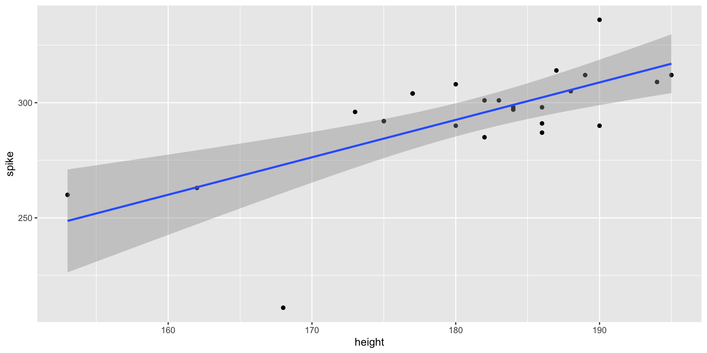
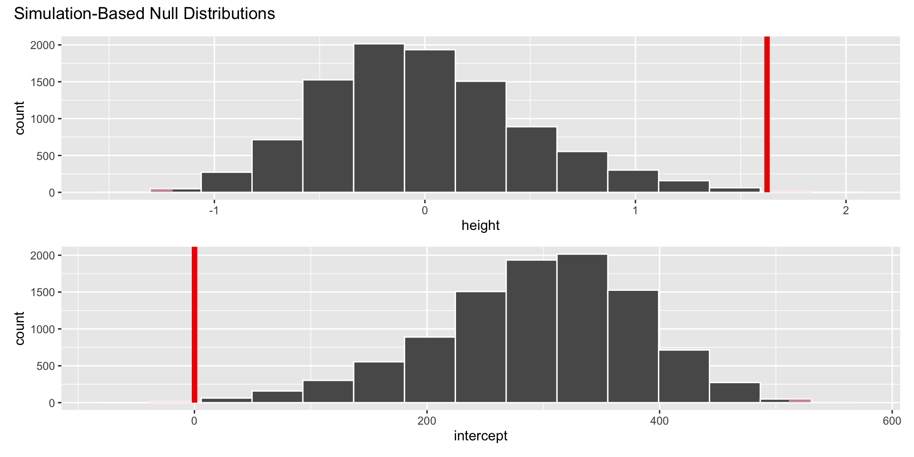
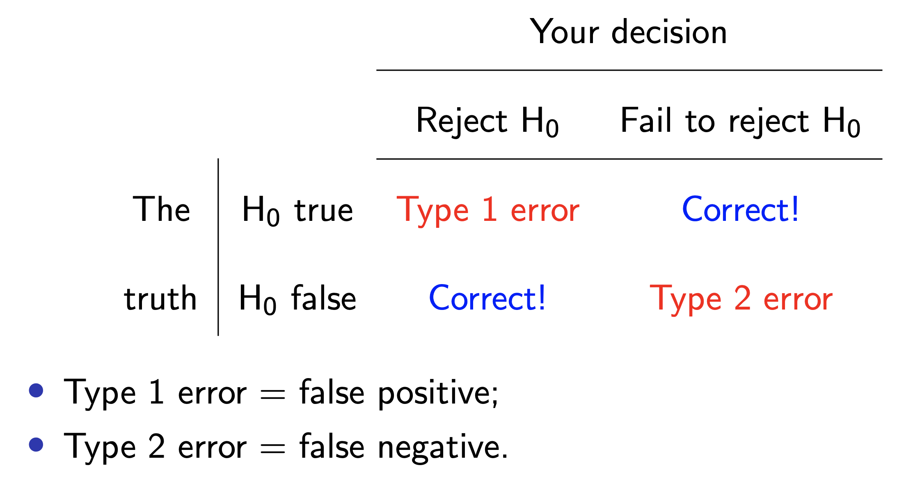

# A tibble: 2 × 2
term estimate
<chr> <dbl>
1 intercept 0.0540
2 height 1.62
Setting hypotheses
Null hypothesis,\(H_0\): “There is nothing going on.” The slope of the model for predicting the spike touch of FIVB athletes from their heights is 0, \(\beta_1 = 0\).
Alternative hypothesis,\(H_A\): “There is something going on”. The slope of the model for predicting the spike touch of FIVB athletes from their heights is different than, \(\beta_1 \ne 0\).
Hypothesis testing “mindset”
Assume you live in a world where null hypothesis is true: \(\beta_1 = 0\).
Ask yourself how likely you are to observe the sample statistic, or something even more extreme, in this world: \(P(b_1 \leq -1.62~or~b_1 \geq 1.62 | \beta_1 = 0)\) = ?
Hypothesis testing as a court trial
Null hypothesis, \(H_0\): Defendant is innocent
Alternative hypothesis, \(H_A\): Defendant is guilty
. . .
Present the evidence: Collect data
. . .
Judge the evidence: “Could these data plausibly have happened by chance if the null hypothesis were true?”
Yes: Fail to reject \(H_0\)
No: Reject \(H_0\)
Hypothesis testing as medical diagnosis
Null hypothesis, \(H_0\): patient is fine
Alternative hypothesis, \(H_A\): patient is sick
. . .
Present the evidence: Collect data
. . .
Judge the evidence: “Could these data plausibly have happened by chance if the null hypothesis were true?”
Yes: Fail to reject \(H_0\)
No: Reject \(H_0\)
Hypothesis testing framework
Start with a null hypothesis, \(H_0\), that represents the status quo
Set an alternative hypothesis, \(H_A\), that represents the research question, i.e. what we’re testing for
Conduct a hypothesis test under the assumption that the null hypothesis is true and calculate a p-value (probability of observed or more extreme outcome given that the null hypothesis is true)
if the test results suggest that the data do not provide convincing evidence for the alternative hypothesis, stick with the null hypothesis
if they do, then reject the null hypothesis in favor of the alternative
Simulating a universe under \(H_0\): the slope of the model for predicting the spike touch of FIVB athletes from their heights is 0, \(\beta_1 = 0\). I.e., no relationship between spike and height.
If I “shuffle” the order of the spike variable, is there a relationship between spike and height? Could height predict spike touch?
What shuffling does
On average, no
Shuffling breaks any link between spike and height (on average)
type = "permute"
Shuffle the spike variable, fit a model and get a slope, record the slope, repeat!
If the null is true, the distribution of these slopes should be centered on zero!
What if we shuffled height instead? Both?
Every day I’m shuffling
ggplot(volleyball, aes(x =height, y =spike))+geom_point()+geom_smooth(method ="lm")

Every day I’m shuffling
ggplot(volleyball, aes(x =height, y =sample(spike)))+geom_point()+geom_smooth(method ="lm")
# A tibble: 2 × 2
term estimate
<chr> <dbl>
1 intercept 0.0540
2 height 1.62
Visualize null distribution (alternative)
visualize(null_dist)+shade_p_value(obs_stat =observed_fit, direction ="two-sided")

Get p-value
null_dist|>get_p_value(obs_stat =observed_fit, direction ="two-sided")
# A tibble: 2 × 2
term p_value
<chr> <dbl>
1 height 0.002
2 intercept 0.002
Make a decision
Based on the p-value calculated, what is the conclusion of the hypothesis test?
Probability of observing your data or something more extreme given the null is true
Since \(p = 0.002\), we reject the null hypothesis and have evidence that there is a statistically significant relationship between an FIVB players spike touch and height.
How small is small enough?
Pick a threshold \(\alpha\in[0,\,1]\) called the discernibility level and threshold the \(p\)-value:
If \(p\text{-value} < \alpha\), reject null and accept alternative;
If \(p\text{-value} \geq \alpha\), fail to reject null;
Sometimes the test will be wrong

Mnemonics
Like effect/affect, sympathy/empathy, insure/ensure/assure, or libel/slander, JZ finds it literally impossible to keep Type 1 versus Type 2 straight. Statistics is famous for unhelpful jargon, and this is some of the worst ever. See if these help you:
Type 1, jump the gun. Type 2, avoid the new.
Alternatively, think of “The Boy Who Cried Wolf.” That story has two parts:
Part 1: the townspeople believe there is a wolf when there isn’t;
Part 2: the townspeople ignore a real wolf while it eats their flock.
In Part 1 they commit a Type 1 error. In Part 2 they commit a Type 2 error.